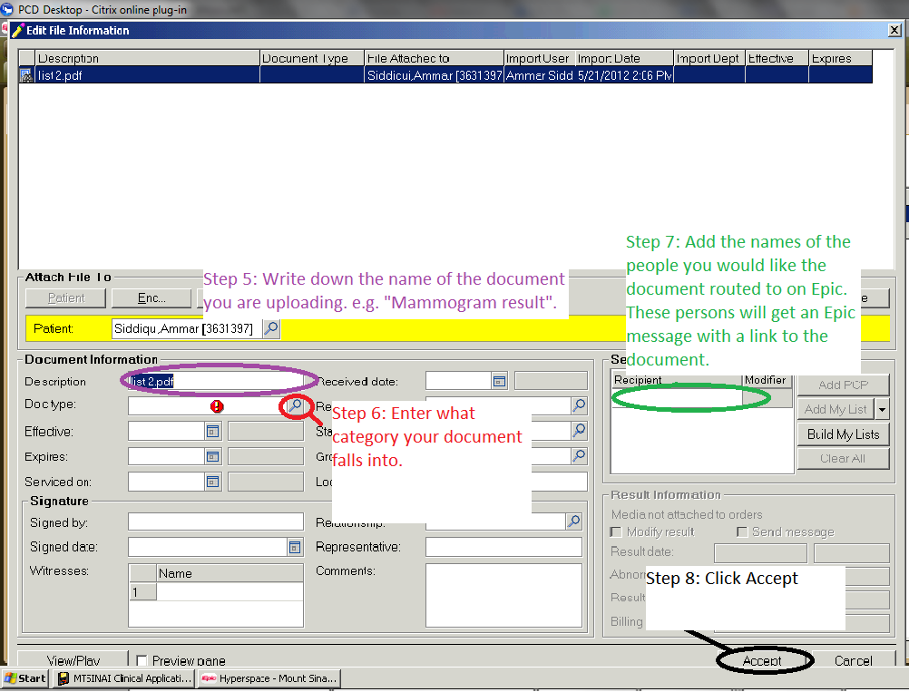

Please follow the Instructions below to upload documents on Epic:
- Click the "More Activities" button on the bottom left of the patient's chart on Epic
- Click "Media Manager"
- On the new window that opens up, click "Import"
- Find the file you would like to upload. You will need to find the file manually (i.e. go to "Computer", then "C:", then to the folder where you stored the file when you uploaded it). The Documents/Pictures/Music folders on the left do not correspond to the same folders on your workstation.
- Enter the name of the document, the type of document it is, and who you would like to get a notification that the document has been uploaded (usually the clinic team).
- Click the accept button at the very bottom of the screen. You might need to resize your windows a little bit go find it.
